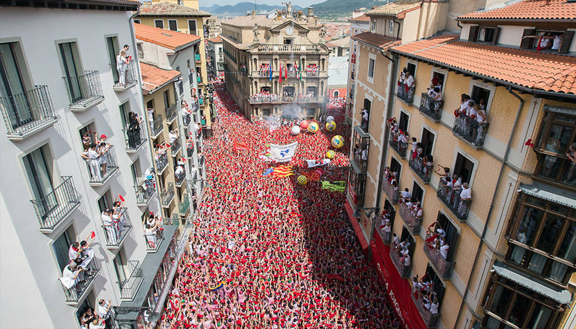

Qué es el Chupinazo
El Chupinazo marca el inicio oficial de San Fermín. A las 12:00 del 6 de julio, la Plaza del Ayuntamiento se llena para dar comienzo a ocho días de fiesta ininterrumpida.
Cuándo y dónde se celebra
Tiene lugar el 6 de julio en el corazón de Pamplona, concentrando a miles de personas en un espacio reducido.
Por qué verlo bien no es fácil
La densidad de gente, el acceso limitado y la propia dinámica del evento hacen que la experiencia desde la plaza sea intensa pero difícil de disfrutar con claridad.
Opciones para vivir el Chupinazo
Hay distintas formas de estar presente en este momento:
- En la plaza: máxima intensidad, pero visibilidad muy limitada.
- En calles cercanas: ambiente festivo, sin visión directa.
- Desde un balcón: perspectiva completa, más espacio y mayor comodidad.
La diferencia no está en estar, sino en cómo se vive.
Tipos de experiencias
Cada experiencia parte de una misma base: vivir el inicio de la fiesta con perspectiva. A partir de ahí, cambia el cómo.


¿Cuánto cuesta vivir el Chupinazo desde un balcón?
Las opciones varían según la ubicación y el acceso. De forma orientativa, suelen situarse entre 500€ y 1200€ por persona.
A partir de ahí, cada propuesta se adapta en función de lo que buscas.
Una forma diferente de comenzar San Fermín
Más allá del momento, se trata de cómo empieza todo. Desde un balcón, el Chupinazo se entiende mejor, se disfruta más y se vive con otra perspectiva.
Por qué hacemos esto
Esto no nace como un servicio. Nace de haber vivido San Fermín desde dentro durante años.
Nuestro papel es simplemente compartir esa forma de vivirlo.
Cuéntanos cómo te gustaría vivirlo y te proponemos opciones a medida, sin compromiso.

No tiene nada que ver con estar abajo. Mucho mejor.
Seguir descubriendo San Fermín
El Chupinazo es solo el comienzo. A partir de ahí, la ciudad cambia de ritmo y de intensidad.
Puedes continuar con el encierro, acercarte a la Procesión o descubrir otros momentos como los Gigantes o el Pobre de mí.
Porque todo empieza aquí, pero no termina aquí.
Un recuerdo que va más allá del momento
Algunas experiencias no terminan cuando acaba el evento. Para grupos, empresas o momentos especiales, podemos acompañarlo con piezas diseñadas específicamente para la ocasión.
Desde elementos sencillos hasta detalles más cuidados, todo se plantea como una extensión natural de la experiencia.
Porque a veces lo que se lleva puesto también forma parte de lo vivido.